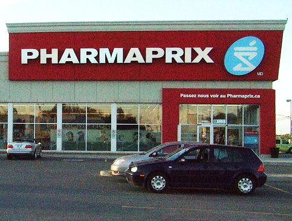

Eu precisava ir no Correio enviar o pagamento do aluguel. Sim, acredite! Muitas pessoas pagam o aluguel enviando um cheque pelo correio. Como fiquei um pouco com medo disso, apesar de todo mundo me falar que é super seguro, consegui a conta corrente do dono do apartamento para fazer um depósito no mês que vem.
Voltando ao assunto rs. Eu precisava ir no correio e não sabia onde ficava o Canada Post mais perto da minha casa. Perguntei para várias pessoas e todos me falaram: Vai na farmácia. Farmácia?! Pensei que meu francês e inglês tinham ido por água abaixo. Até que eu resolvi conferir pra ver.
Fui até a Pharmaprix e meio envergonhada perguntei: É aqui que posso enviar carta? A moça sorriu e disse: Sim, no fundo da farmácia no segundo andar.
Nossa! Meu inglês e francês estavam salvos! rs E fui enviar a carta. Como estava com medo de enviar a carta com um cheque dentro, perguntei quanto seria para receber uma confirmação de recebimento. Nove doláres. Isso mesmo! NOVE! Eu desisti e resolvi arriscar. Deu certo! rs
A farmácia aqui é enorme. Na maioria das vezes são dois andares. Embaixo ficam produtos de maquiagem, váaaaaaarias marcas e também shampoos, condicionadores, leite, batata frita, revista rsrs. E em cima ficam produtos que só são vendidos com receita médica e remédios que você pode comprar sem receita como: Tylenol, Vick, Vitaminas, etc.
E no fundo, o correio, é claro!
Dica: Alguns produtos como sabonete, hidratante, vale mais a pena comprar na Pharmaprix do que no Metro. Às vezes leite, suco também saem mais em conta. Quando você compra produtos de beleza, você pode ganhar várias amostras de outros produtos. Além disso, você pode fazer sua carteirinha fidelidade na Pharmaprix de graça e ganhar pontos e descontos, e não precisa pagar pela sacola plástica que em alguns mercados custa 0.9 centavos.